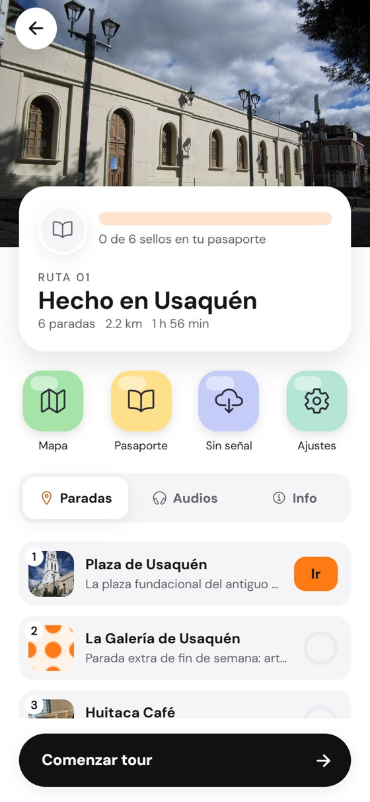

Cómo funciona
Abre la app, camina y descubre
Con guía o por tu cuenta. Salida desde la Plaza de Usaquén, frente a la iglesia, todos los días de 10 a. m. a 4 p. m.
Descarga la ruta
Instálala en Android o ábrela en la web. Si la descargas antes de salir, funciona sin señal.
Camina hasta cada lugar
El GPS descubre la parada cuando llegas. Si falla entre edificios, toca «Ya estoy aquí».
Mira, escucha y sella
Lee la historia, cumple el reto de observación, escucha la música del lugar y guarda el sello.
Lo que trae
Una app para usar caminando
Descubre al llegar
Cada lugar se revela cuando estás ahí, con vibración y su historia.
Pasaporte con sellos
Un sello con fecha por cada lugar y una postal para compartir al final.
Música en cada lugar
Suena sola cuando descubres la parada.
Sin señal
Descarga la ruta y el recorrido sigue funcionando aunque no tengas datos.
Mapa para raspar
El mapa se destapa por donde caminas.

La ruta
Seis lugares, una cadena
Del pueblo antiguo a quienes hacen, venden, muestran y conservan. Los sábados y domingos suma una parada extra.